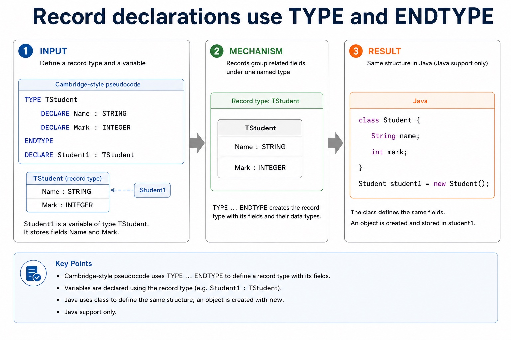

Lesson 124 | 45 minutes | Paper 2 Section 10 | informal questioning
Java helps you understand programming, but Cambridge pseudocode is the exam language.
This lesson separates declaration styles so students do not donate marks to punctuation. Cambridge
pseudocode usually declares using DECLARE Identifier : Type, while Java usually places the
type before the identifier and uses semicolons. The idea can match; the syntax does not.
Identify Cambridge pseudocode declarations for variables, arrays and records
Compare equivalent Java declarations without mixing syntax
Correct common exam mistakes in declarations and assignment
Pseudocode
DECLARE Count : INTEGER
Count <- 0
DECLARE Scores : ARRAY[1:30] OF INTEGER
Java support only
int count = 0;
int[] scores = new int[30];
Same intention. Different exam surface.
Why this matters
Paper 2 marks often depend on clear declarations, suitable data types and correct pseudocode assignment.
Common trap
int count; is Java-style. In Cambridge pseudocode, write DECLARE Count : INTEGER.
Warm-up hook
Which answer belongs in a Paper 2 pseudocode answer?
The task says: declare an integer variable called Count. Choose the Cambridge-style answer.
int count;
DECLARE Count : INTEGER
INTEGER Count;
Count <- INTEGER
Choose the declaration style expected in Cambridge pseudocode.
Core principle
Do not mix the two languages inside one answer
Chinese support: declaration 是“声明”；assignment 是“赋值”；syntax 是“语法形式”。
Feature
Cambridge-style pseudocode
Java support only
Variable declaration
DECLARE Count : INTEGER
int count;
Assignment
Count <- 0
count = 0;
Array declaration
DECLARE Scores : ARRAY[1:30] OF INTEGER
int[] scores = new int[30];
Record/class idea
TYPE ... ENDTYPE
class ... { }
Do not mix the two languages inside one answer
Do not mix the two languages inside one answer: source-grounded visual explanation.
Lesson fact: Core principleLesson fact: Cambridge-style pseudocodeLesson fact: Java support onlyLesson fact: Variable declarationLesson fact: DECLARE Count : INTEGERLesson fact: int count;Lesson fact: AssignmentLesson fact: Count <- 0Lesson fact: count = 0;Lesson fact: Array declarationLesson fact: DECLARE Scores : ARRAY[1:30] OF INTEGERLesson fact: int[] scores = new int[30];
Data type mapping
Map concepts, not spelling
Meaning
Pseudocode type
Java support example
Map concepts, not spelling
Map concepts, not spelling: source-grounded visual explanation.
Lesson fact: Data type mappingLesson fact: Pseudocode typeLesson fact: Java support exampleLesson fact: whole numberLesson fact: decimal numberLesson fact: single characterLesson fact: true/false
Variables
Declare first; initialise separately when needed
Cambridge-style pseudocode
DECLARE Count : INTEGER
Count <- 0
DECLARE Name : STRING
Name <- "Ali"
Java support only
int count = 0;
String name = "Ali";
Declare first; initialise separately when needed
Declare first; initialise separately when needed: source-grounded visual explanation.
Lesson fact: VariablesLesson fact: Cambridge-style pseudocodeLesson fact: DECLARE Count : INTEGERLesson fact: Count <- 0Lesson fact: DECLARE Name : STRINGLesson fact: Name <- "Ali"Lesson fact: Java support onlyLesson fact: int count = 0;Lesson fact: String name = "Ali";
Constants
Constants are named values that should not change
Cambridge-style pseudocode
CONSTANT MaxSize = 100
CONSTANT PassMark = 40
Java support only
final int MAX_SIZE = 100;
final int PASS_MARK = 40;
Java naming conventions may use capitals for constants. Cambridge pseudocode credit comes from clear constant declaration and use.
Constants are named values that should not change
Constants are named values that should not change: source-grounded visual explanation.
Lesson fact: ConstantsLesson fact: Cambridge-style pseudocodeLesson fact: CONSTANT MaxSize = 100Lesson fact: CONSTANT PassMark = 40Lesson fact: Java support onlyLesson fact: final int MAX_SIZE = 100;Lesson fact: final int PASS_MARK = 40;Lesson fact: Java naming conventions may use capitals for constants. Cambridge pseudocode credit comes from clear constant declaration and use.
Arrays
Cambridge array bounds are stated explicitly
Cambridge-style pseudocode
DECLARE Scores : ARRAY[1:30] OF INTEGER
Scores[1] <- 72
Java support only
int[] scores = new int[30];
scores[0] = 72;
Index warning: if pseudocode declares ARRAY[1:30], do not automatically use Java's index 0 in the exam answer.
Cambridge array bounds are stated explicitly
Cambridge array bounds are stated explicitly: source-grounded visual explanation.
Lesson fact: Cambridge-style pseudocodeLesson fact: DECLARE Scores : ARRAY[1:30] OF INTEGERLesson fact: Scores[1] <- 72Lesson fact: Java support onlyLesson fact: int[] scores = new int[30];Lesson fact: scores[0] = 72;Lesson fact: Index warning: if pseudocode declares ARRAY[1:30] , do not automatically use Java's index 0 in the exam answer.
Records
Record declarations use TYPE and ENDTYPE
Cambridge-style pseudocode
TYPE TStudent
DECLARE Name : STRING
DECLARE Mark : INTEGER
ENDTYPE
DECLARE Student1 : TStudent
Java support only
class Student {
String name;
int mark;
}
Student student1 = new Student();
Record declarations use TYPE and ENDTYPE

Record declarations use TYPE and ENDTYPE: source-grounded visual explanation.
Lesson fact: Cambridge-style pseudocodeLesson fact: TYPE TStudentLesson fact: DECLARE Name : STRINGLesson fact: DECLARE Mark : INTEGERLesson fact: DECLARE Student1 : TStudentLesson fact: Java support onlyLesson fact: class Student {Lesson fact: String name;Lesson fact: int mark;Lesson fact: Student student1 = new Student();
Assignment versus comparison
<- changes a value; = usually tests equality in conditions
Assign
Count <- Count + 1
store a new value in Count
Compare
IF Count = 10 THEN
test whether Count equals 10
Java warning
count == 10
Java equality syntax is not the expected pseudocode style
<- changes a value; = usually tests equality in conditions
<- changes a value; = usually tests equality in conditions: source-grounded visual explanation.
Lesson fact: Assignment versus comparisonLesson fact: PseudocodeLesson fact: Count <- Count + 1Lesson fact: store a new value in CountLesson fact: IF Count = 10 THENLesson fact: test whether Count equals 10Lesson fact: Java warningLesson fact: count == 10Lesson fact: Java equality syntax is not the expected pseudocode style
Interactive declaration converter
Convert Java-style meaning into pseudocode
Java-style declaration
int count;
double price;
String name;
boolean enrolled;
int[] scores = new int[30];
Convert
Choose a declaration to convert.
Syntax sorter
Which syntax belongs to which answer style?
DECLARE Total : REAL
double total;
Scores[Index] <- 50
scores[index] = 50;
Click a statement to identify whether it is pseudocode or Java-style.
Which syntax belongs to which answer style?
Which syntax belongs to which answer style?: source-grounded visual explanation.
Lesson fact: Syntax sorterLesson fact: Click a statement to identify whether it is pseudocode or Java-style.
Worked examples
Declaration conversions
Variable
Constant
Array
Record
Practice
Ten quick declaration checks
Type a concise answer, then check. Each question also has its own answer button.
Mistake debugging
Fix mixed-syntax answers
Exam-style questions
Original Cambridge-style questions with expandable MS
These questions focus on declarations, type choices, array bounds, records, constants and strict pseudocode style.
Summary
Declaration checklist
Declare DECLARE Name : TYPE for variables.
Assign use <- to store a value.
Separate Java syntax supports learning; pseudocode earns Paper 2 marks.
Homework
Translate without mixing syntax
Task 1: Convert declarations
Convert these Java-style declarations to Cambridge-style pseudocode: int total;, String name;, boolean found;.
Task 2: Array declaration
Write pseudocode to declare 50 REAL readings and assign 12.5 to the first element.
Task 3: Record declaration
Define TBook with Title, ISBN and Pages fields, then declare Book1 as TBook.